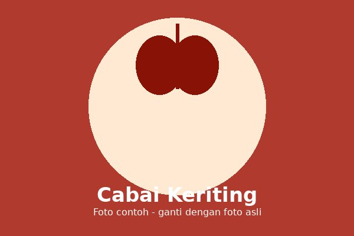

Capsicum annuum var. longum
← Kembali ke Daftar Tanaman ← Back to Plant ListCabai keriting adalah jenis cabai merah dengan bentuk buah panjang dan bergelombang. Cabai ini menjadi salah satu bumbu dasar yang paling sering dipakai dalam masakan Indonesia, terutama untuk membuat sambal.
Curly chili is a type of red chili with a long, wavy pod. It is one of the most common base seasonings in Indonesian cooking, especially for making sambal.
Tumbuh baik di dataran rendah hingga menengah dengan iklim tropis, pada tanah yang gembur dan memiliki drainase baik.
Grows well in lowland to medium-elevation tropical climates, in loose, well-drained soil.